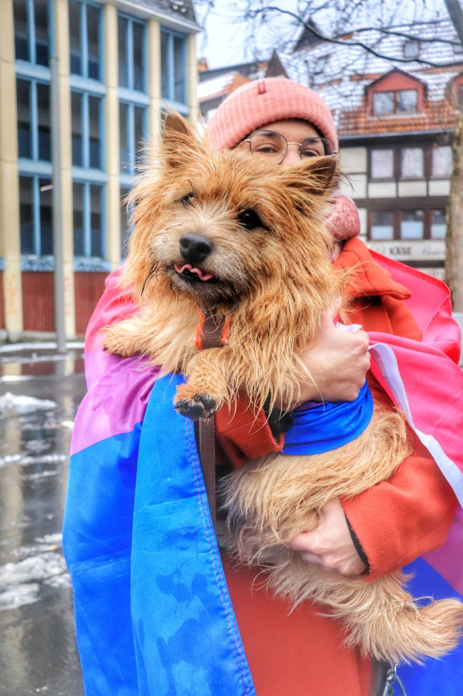
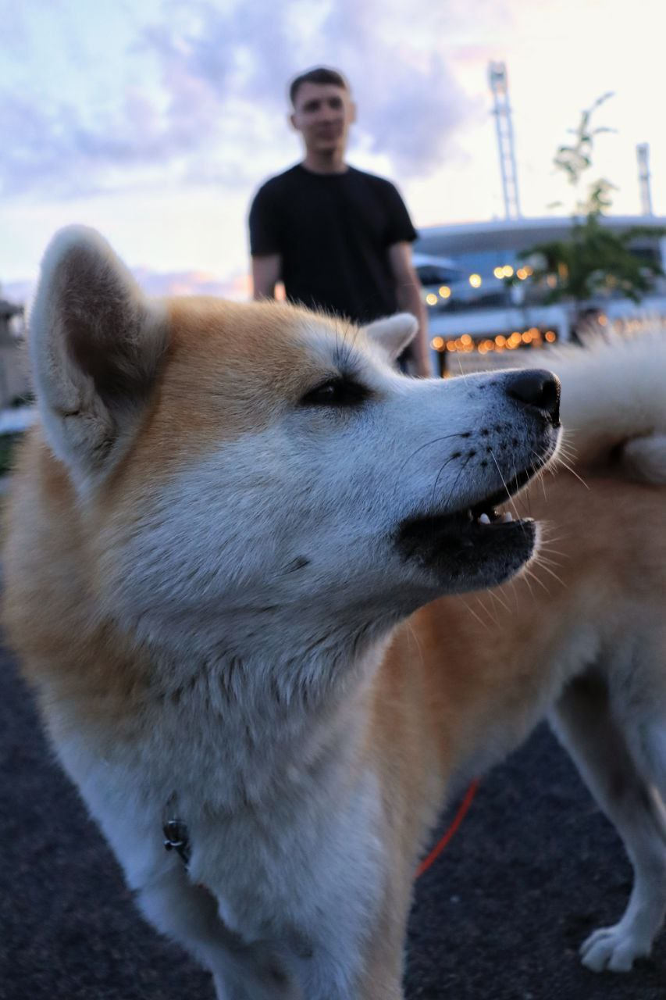
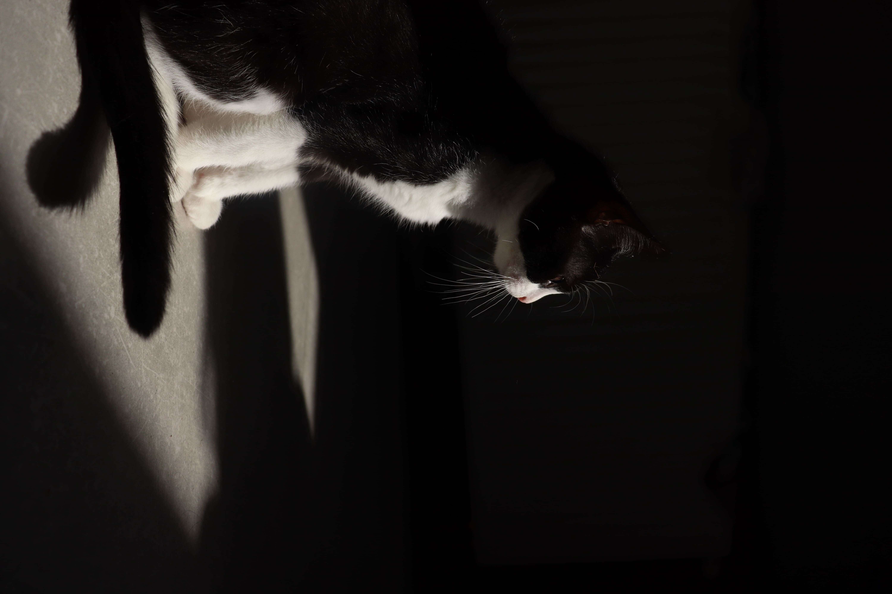
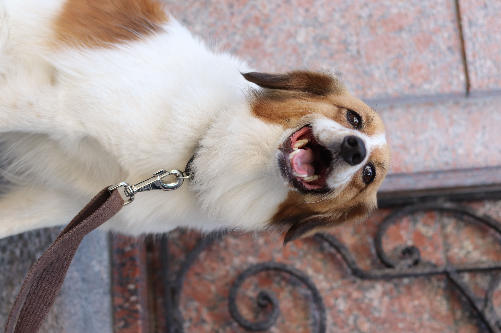
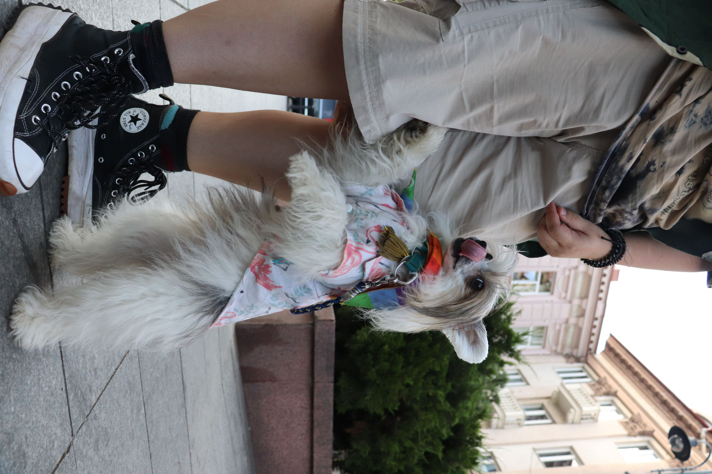

Animal Photography Gallery
Capturing images of pets highlights their unique traits and emotions, creating warm and memorable moments. These photos help preserve memories of our furry companions, strengthening the bond between them and their owners.





×